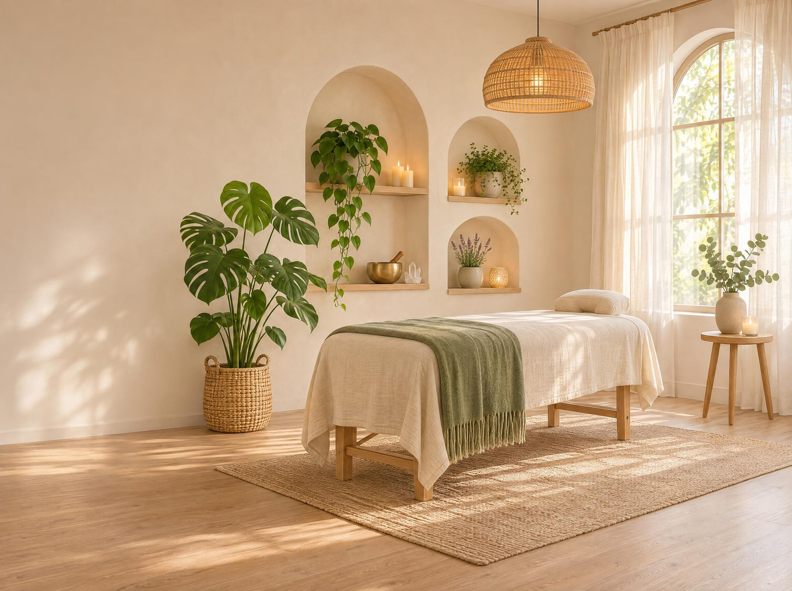
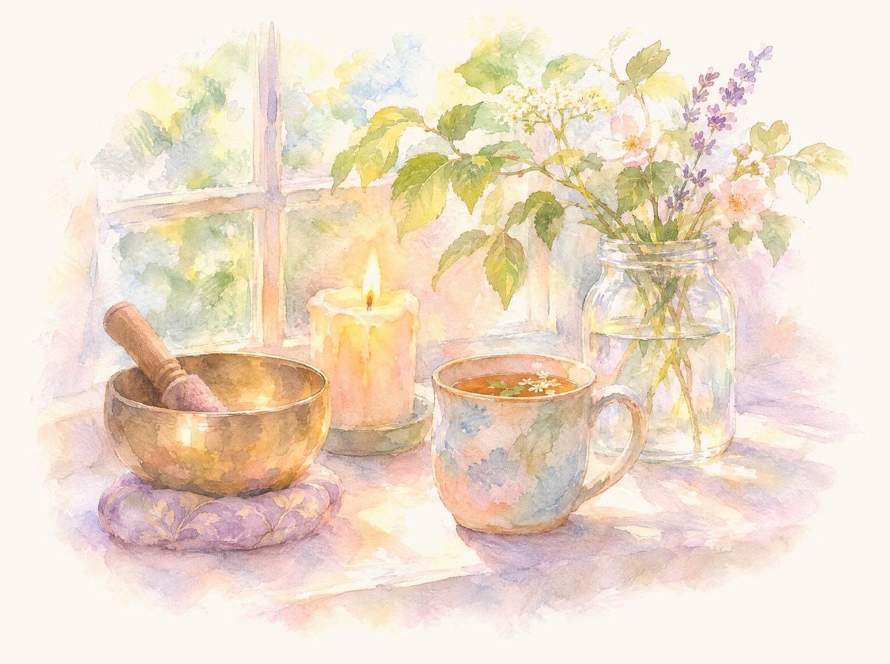

1Garden Room
Sage green and cream, with soft arches and plants everywhere. Calm and bright. It feels like walking into your studio.

Same words. Same sessions and prices. Three very different moods. Right now you’re just picking a look.
Each one has a home page and an about page you can click through. Look at them on your phone AND your computer…both matter.

1Sage green and cream, with soft arches and plants everywhere. Calm and bright. It feels like walking into your studio.
A sunset over the lake and deep forest greens. Warm, a little dramatic. The lakefront retreat really shines here.

3Painted paper and pastel washes, with buttons that look brushed on. The softest of the bunch…it feels handmade.
There’s a little bar in the bottom corner of every page. Use it to hop between the three designs without losing your place.
Pick a favorite. Or tell me what you’d take from each one…we can mix.
Call me.
Jon